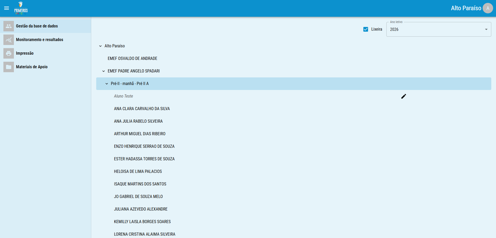
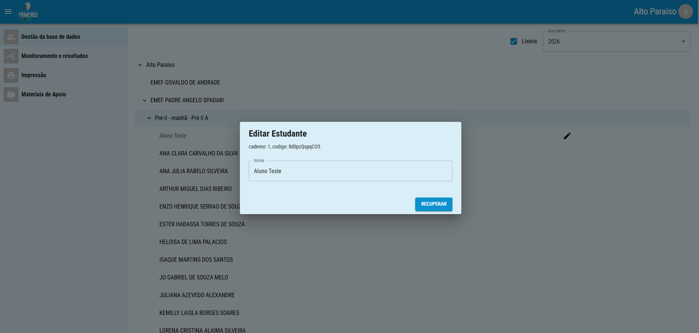
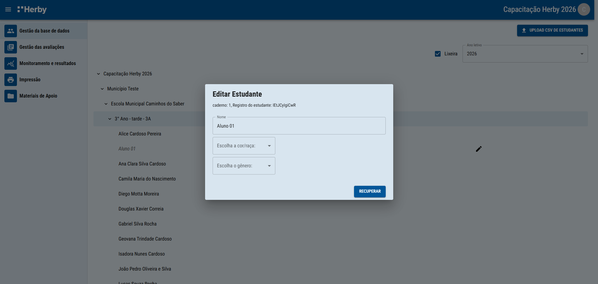

Como recuperar escolas, turmas ou estudantes excluídos.
Caso seja necessário recuperar dados excluídos, basta marcar o ícone lixeira e buscar a escola, turma ou estudante a ser recuperado, que estará em itálico.

Para recuperar, clique no ícone pincel, localizado na mesma linha do registro. Logo após, basta clicar em recuperar. É possível recuperar toda uma escola, turma ou apenas um estudante.

Agora é possível recuperar dados deletados, habilitando a caixa lixeira na parte superior da tela. Para recuperar, basta encontrar o dado, clicar no pincel e logo após em recuperar.
